Префектура Киото · Киото · лавки поставщиков двора
Что любил императорский двор: сладость, комбу, веер и благовония из старых лавок Киото
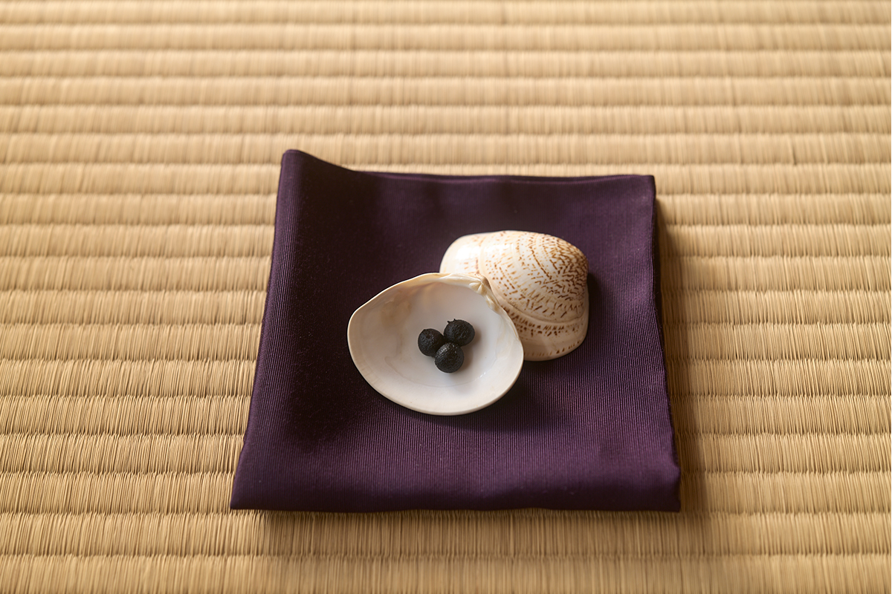
Киото долго был столицей, и по всему городу до сих пор живут вещи и угощения, которые любили императоры и придворная знать. Купить их можно в старых лавках, а заодно прикоснуться к культуре двора.
Сладости
«Мацуя Токива»: рецепт, который знает только семья
Меньше чем в ста метрах к югу от ворот Сакаимати-гомон парка Киото-гёэн торгует кондитерская «Мацуя Токива». На её норэне написано другое имя, «Мацуя Ямасиро», и у этого расхождения своя история.
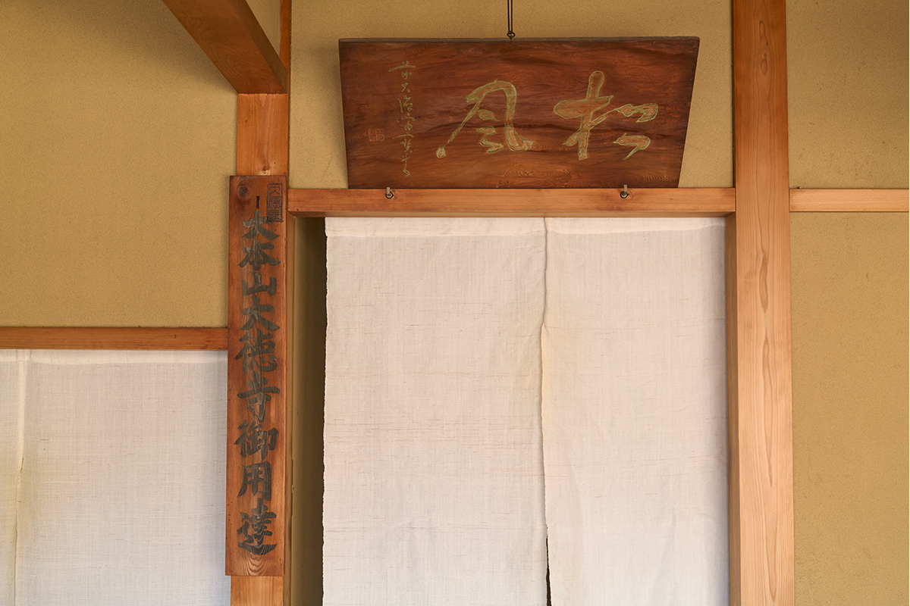
Лавку основали в годы Дзёо (1652–1655). Предок нынешних хозяев был кондитером при монастыре Дайтоку-дзи, получил право входить во дворец, и император Го-Комё (1633–1654) пожаловал ему титул «Онкаси Ямасиро-но дайдзё».
Дайдзё было почётным званием, которое давали горожанам и ремесленникам с выдающимся мастерством. Весь титул означал мастера, который в Ямасиро, на юге нынешней префектуры Киото, делает сладости для императора. Два слова из него лавка и взяла себе в имя: до какого-то времени она называлась «Мацуя Ямасиро».
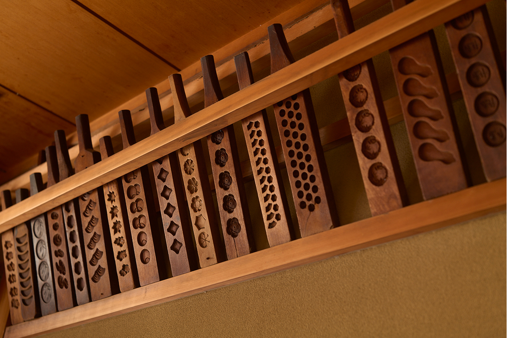
Имя лавки встречается и в «Кё-хабутаэ», книге эпохи Эдо о традициях и истории Киото. Тогда лавка стояла у монастыря Дайтоку-дзи и делала сладости для чайной церемонии.
Главная сладость лавки, «Мурасакино мисо-мацукадзэ», тоже начиналась как угощение к чаю. Название взято из пьесы театра но «Мацукадзэ», а способ приготовления лавке передал монах Когэцу (1574–1643), настоятель Дайтоку-дзи.
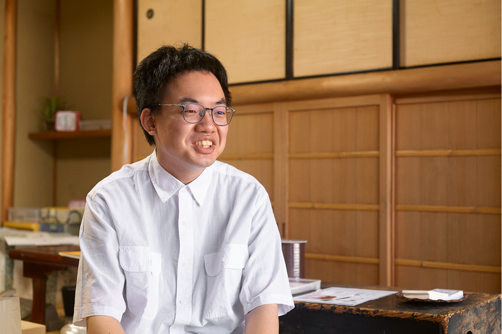
В тесто идут только белое мисо из Киото, пшеничная мука, сахар и кунжут, которым посыпают сладость в самом конце.
«Раньше тесто пекли на углях, теперь в печи, сделанной на заказ. Всё остальное, и продукты, и способ, осталось как было»
хозяин лавки в 17-м поколении
Тесто, подслащённое белым мисо и сахаром, получается чуть тягучим и пышным. Как его делать, знает только семья хозяев: вкус, который одобрил ещё император Го-Комё, передают одному наследнику в каждом поколении.
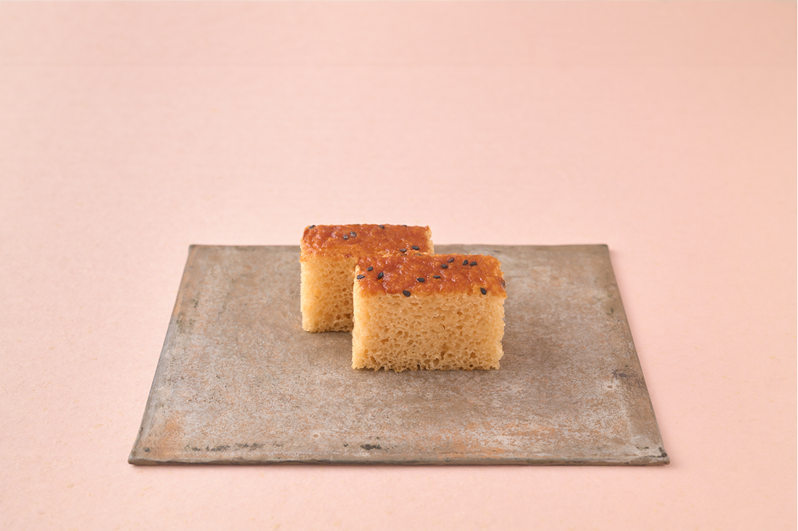
На строгой белой обёртке стоят слова «Окаси тёсиндзё»: так называли мастерские, которые делали сладости для двора и храмов. Маленькая коробка под крышкой, отделанной японской бумагой, сделана тщательно, и вся сладость выглядит благородно.
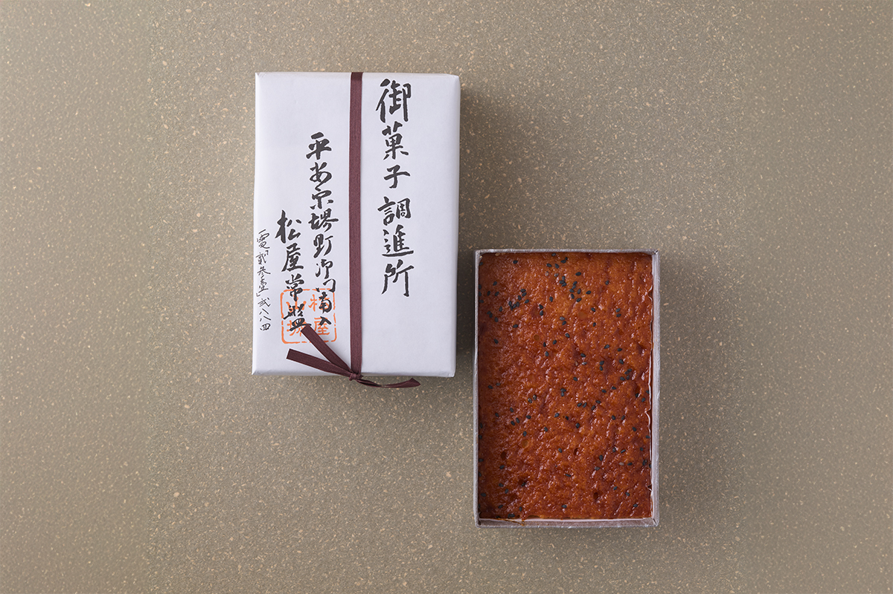
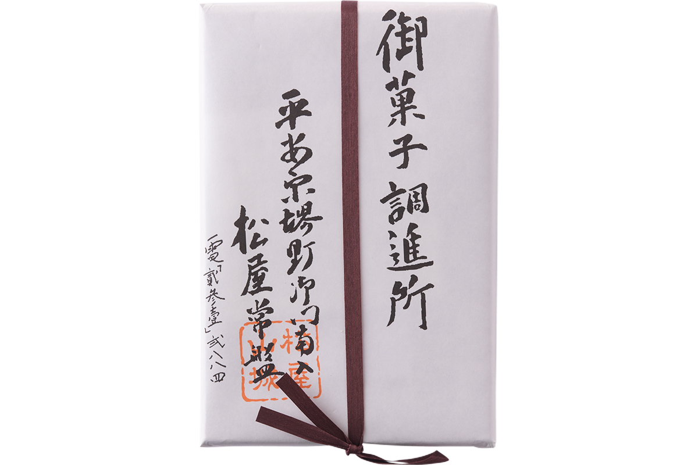
Говорят, эту сладость очень любил император Мэйдзи (1852–1912), и её поднесли на торжество в честь 25-летия его свадьбы. Наверное, поэтому её полюбил и император Сёва (1901–1989), а нынешний император, зная об этом, часто покупал её в подарок из Киото.
Ещё примерно в 2014 году лавка продавала и сладости к чайной церемонии, а к 2024 году у дворца делали только ту, что любили императоры.
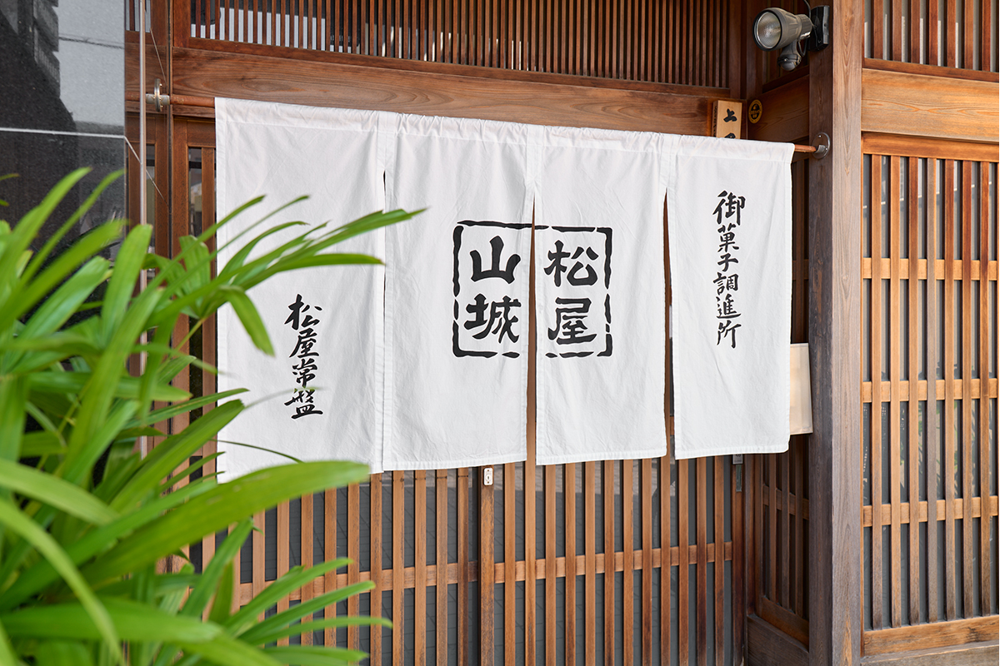
«Мацуя Токива»
- Адрес
- префектура Киото, Киото, район Накагё, Сакаимати-дори Марутамати-сагару
- Телефон
- +81 75-231-2884
- Часы работы
- 9:30–15:00
- Выходные
- нет
Комбу
«Мацумаэя»: комбу, которое готовят шесть лет
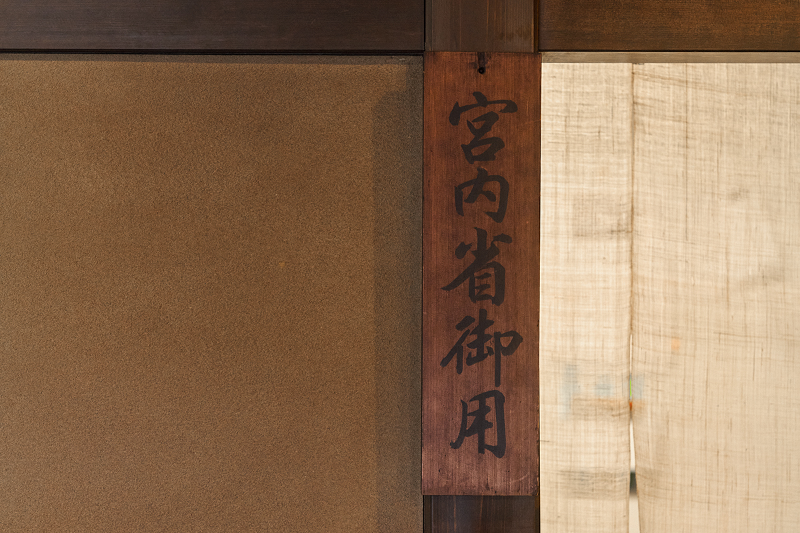
При слове «комбу» многие представляют подарочные наборы или бульон для японской кухни. Но в XIV веке, когда в Японии было два императорских двора, Северный и Южный, комбу с Хоккайдо везли через порты Японского моря в горы Ёсино, где стоял Южный двор. Комбу стал главным товаром на вывоз и поддерживал казну двора.
Ценным товаром ведал предок владельцев «Мацумаэя». Двор ему доверял, и, видимо, служить императору было для него естественно: когда Южный двор пал, он перебрался в Киото и продолжил трудиться для императорской семьи.
Лавка ведёт историю с 1392 года, а название ей пожаловал император Го-Камэяма (около 1347–1424), последний император Южного двора.
«Во дворец, похоже, поставляли самые разные вещи. Но раньше мы занимались комбу, поэтому во дворце были ещё и чем-то вроде поваров»
наследник лавки в 33-м поколении
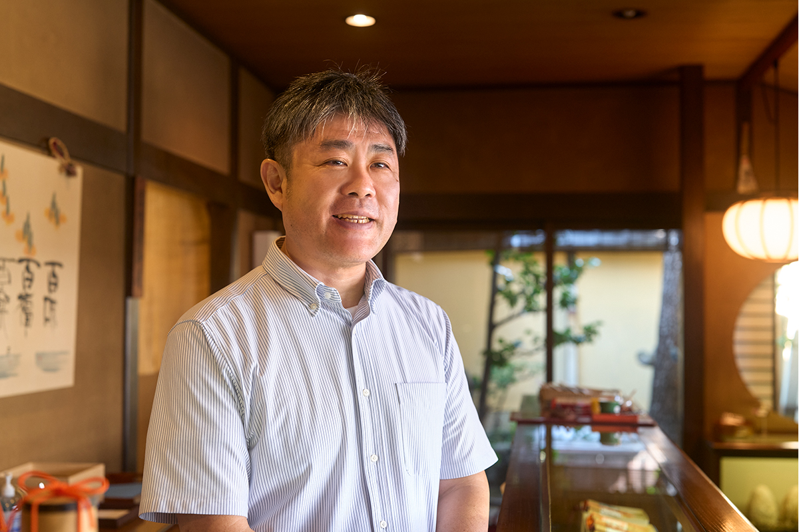
«Мацумаэя» была тесно связана с императорами, но когда двор переехал в Токио, решила остаться в Киото. Тогда лавка впервые начала продавать комбу всем покупателям.
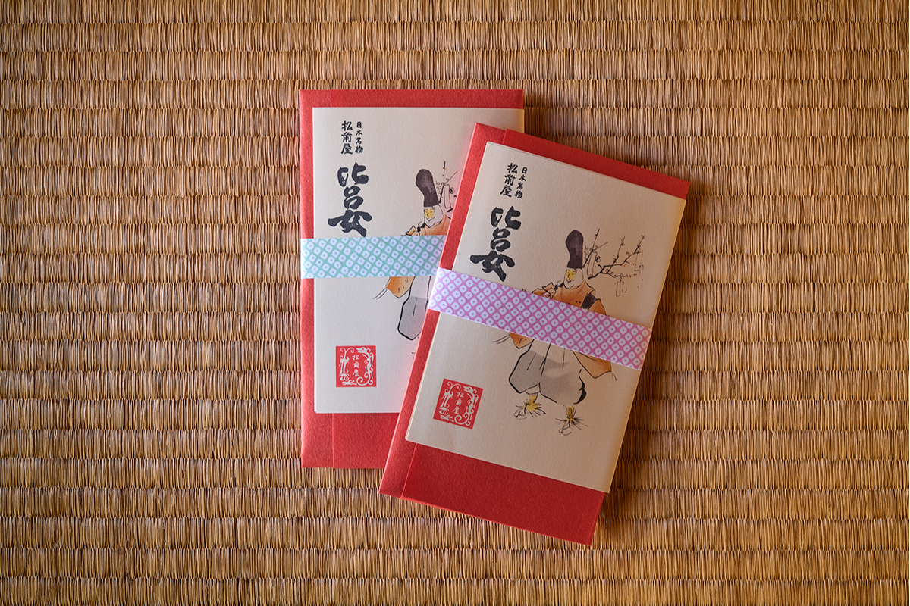
«Хиромэ» начали продавать в 1875 году. Когда-то эти фигурные полоски комбу поставляли в императорский дворец Киото Госё как сладость. Делают их из комбу макомбу с юга Хоккайдо и по-прежнему так же, как раньше: широкие листья, чуть сладковатые на вкус, сначала пять лет выдерживают на складе, потом приправляют уксусом и выдерживают ещё год.
Готовые полоски покрываются лёгким белым налётом, у них глубокий вкус самого комбу и мягкая солёность, так что их вполне можно есть и просто так, как закуску. «Хиромэ» продают в складной обёртке с рисунком «Фумидзукай» с самой первой упаковки, а ещё в керамическом горшочке и в бамбуковой трубке.
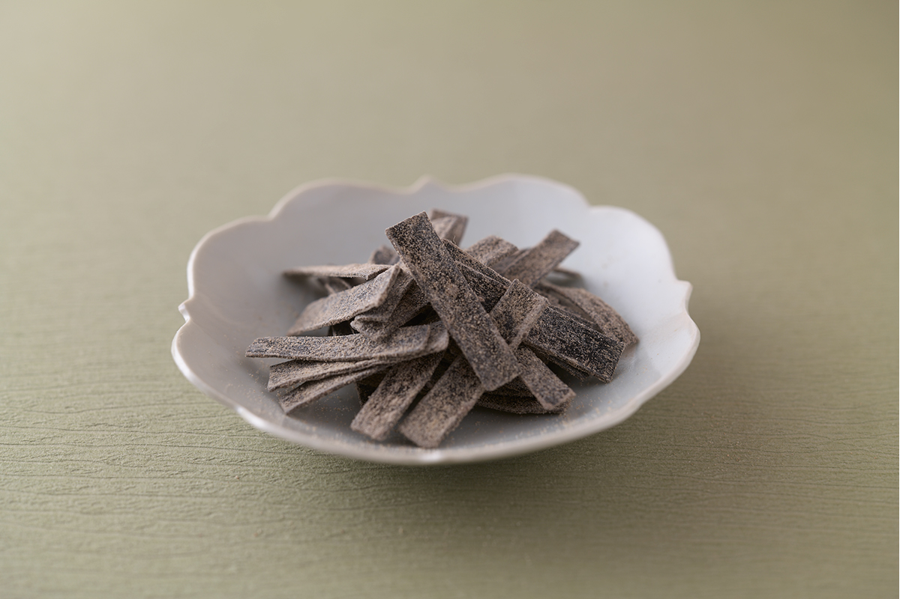
Выбор в специализированной лавке поражает. «Госё-но хана», долго томлённый и мелко порубленный комбу, хорош к рису, залитому чаем. А если будете здесь с октября по март, рекомендуем «Кюхи-комбу»: за нежную текстуру и тонкий вкус его называют свежей сладостью из комбу. Этот вкус трудно забыть, и в нём собрано мастерство, которым лавка долго служила императорской семье.
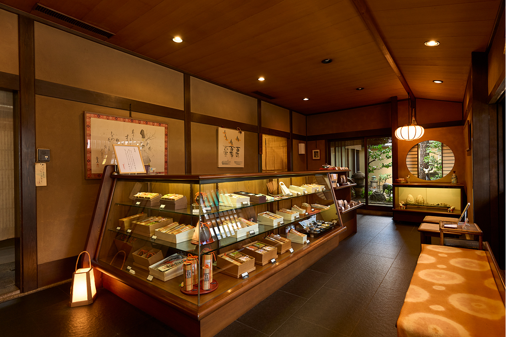
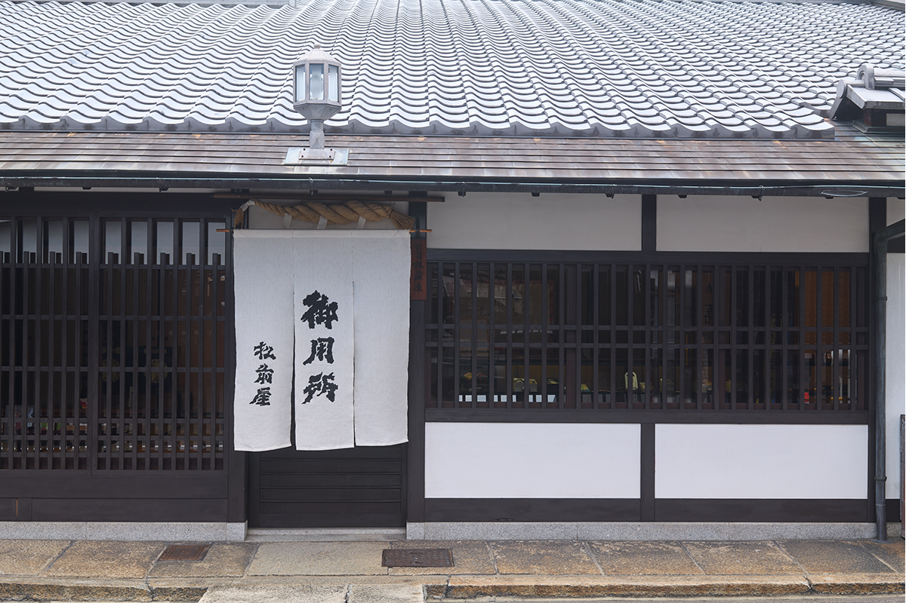
«Мацумаэя»
- Адрес
- префектура Киото, Киото, район Накагё, Камандза-дори Марутамати-минамииру
- Телефон
- +81 75-231-4233
- Часы работы
- 10:00–17:30
- Выходные
- воскресенье, праздники
Веера
«Айба»: утива, которые делали для дворца
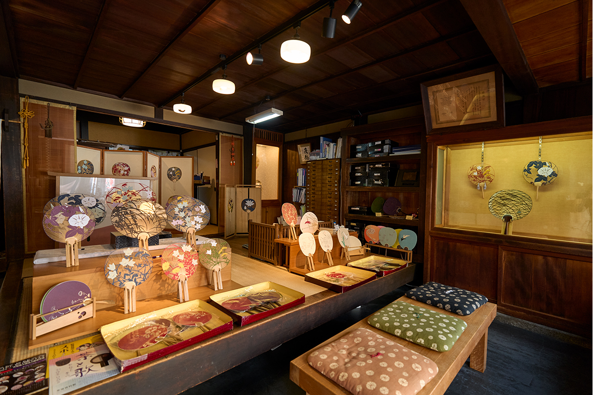
Среди старых поставщиков двора были лавки, которые до определённого времени работали только по заказам дворца. Одна из них «Айба», основанная в 1689 году.
Первый хозяин был родом из Такасимы в префектуре Сига, где растёт хороший бамбук. В Киото он делал складные веера и занимался книгоизданием. С седьмого поколения лавка делает только киотские утива, плоские веера, и поставляла их во дворец. Кё-утива продолжают традицию «госё-утива», нарядных вееров, которые любила знать. Все этапы работы выполняются вручную, и в каждом веере собрано то, что ценили при дворе.
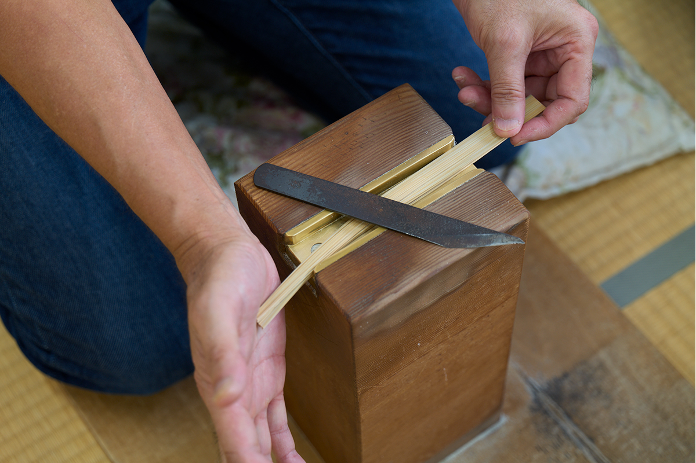
Ремесленные вещи из Киото когда-то с восхищением называли «кёмоно». Хвалили в них надёжность работы и дух столицы, вложенный в неё. В умении передать природу и времена года жил характер, выросший в Киото, а заказы дворца оттачивали и вкус мастеров, и их руки.
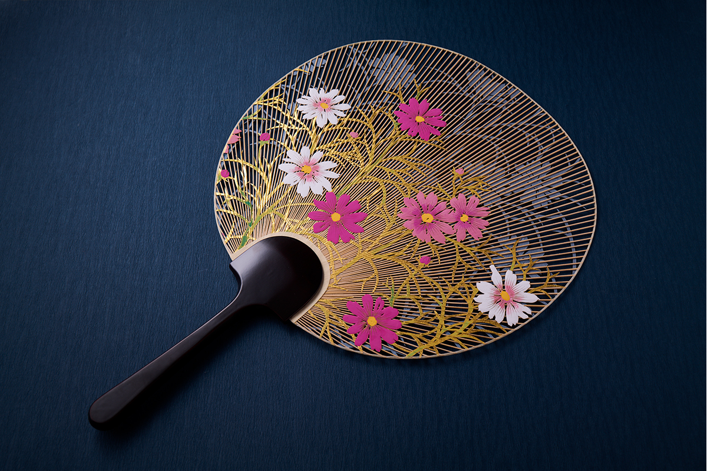
После эпохи Мэйдзи «Айба» начала продавать веера всем, и тонкую работу стало легко купить. Впервые войдя в лавку, вы наверняка засмотритесь на веера для любования в витрине.
Веер с двойной ажурной отделкой «рёсукаси» это настоящее искусство: каркас из 90–120 бамбуковых спиц остаётся открытым, а обе стороны украшены вырезанными из японской бумаги узорами. На него не надоедает смотреть ни вблизи, ни издалека. Узоры самые разные, от переходящих из поколения в поколение до работ нынешнего хозяина, и каждый красив, как картина.
Среди вееров для повседневного дела есть и отпечатанные с досок эпохи Эдо. Рисунки на них выглядят так современно, что трудно поверить, что им несколько сотен лет.
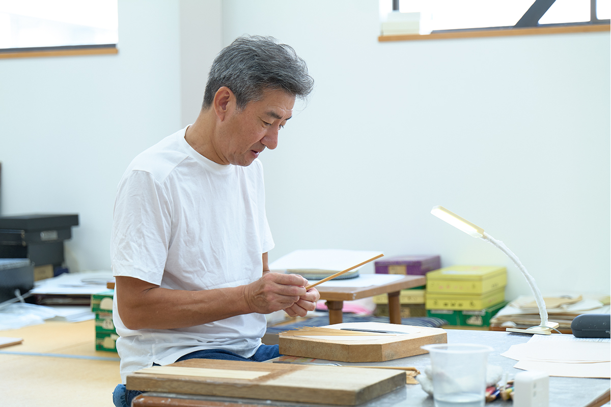
Сегодня утива привычная бытовая вещь, но когда-то веер служил популярным художникам местом, где они показывали свои работы. В коллекции прежнего хозяина есть веера, расписанные художниками знаменитой школы живописи Кано.
«В том, как тщательно они доделаны, много подсказок, которые можно использовать и сегодня»
хозяин лавки в 10-м поколении
Девиз лавки: «Познавать новое, изучая старое».
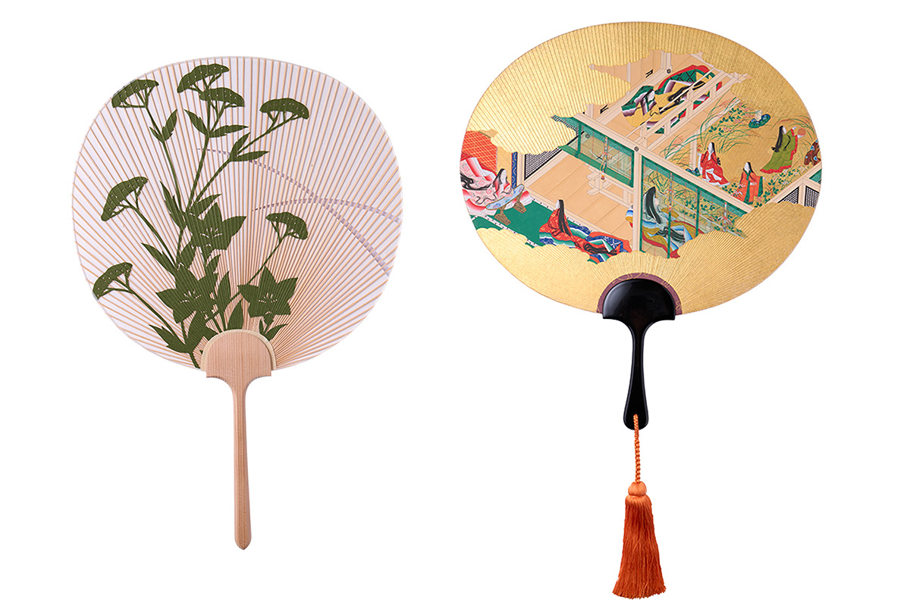
Почувствовав, чем хороши кё-утива, можно попробовать заказать свой веер. Достаточно назвать мотив, который нравится, а детали лучше оставить лавке. Так у вас окажется «кёмоно» работы мастеров, которых признавал двор.
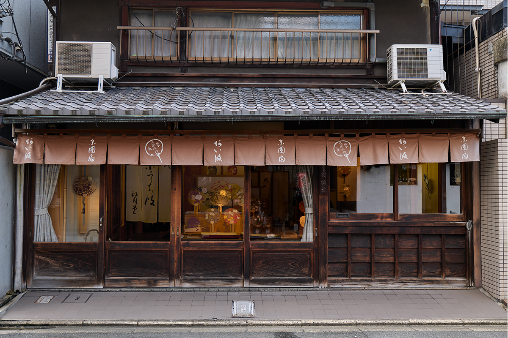
«Айба»
- Адрес
- префектура Киото, Киото, район Накагё, Янагинобаба-дори Роккаку-сагару
- Телефон
- +81 75-221-1460
- Часы работы
- 10:00–18:00
- Выходные
- воскресенье, праздники (с апреля по июль без выходных)
- Сайт
- kyo-aiba.jp
Благовония
Yamadamatsu: игра ароматов аристократов Хэйан
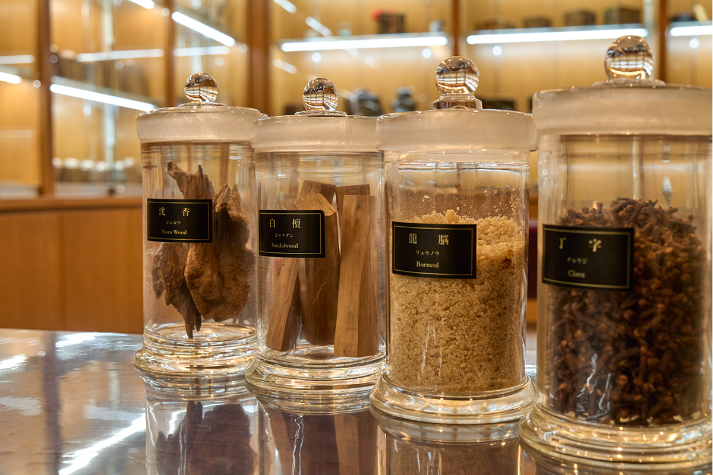
Культура благовоний пришла в Японию вместе с буддизмом примерно в VI веке и началась с курения благовоний на буддийских обрядах. В летописи «Нихон сёки» есть рассказ о том, как к острову Авадзи прибило ароматное дерево «дзинсуйко», и его запах был так прекрасен, что дерево поднесли двору.
В эпоху Хэйан благовония глубоко вошли в культуру знати и стали удовольствием повседневной жизни. Тогда было в моде пропитывать ароматом «такимоно» одежду и комнаты, и это описано в нескольких главах «Повести о Гэндзи».
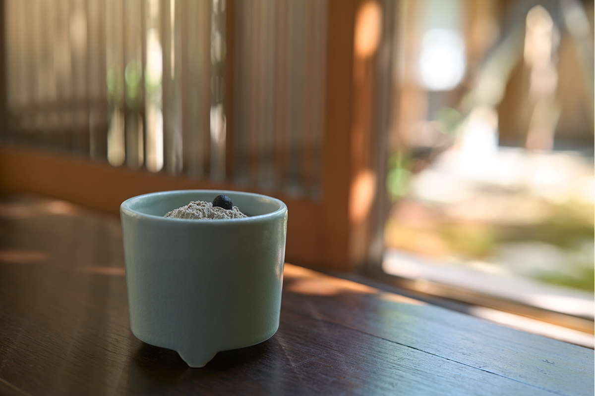
Yamadamatsu стоит к западу от парка Киото-гёэн. Лавку основали в годы Кёхо (1716–1736) как торговлю лекарственным сырьём, потом она стала оптом продавать ароматное дерево и другое сырьё для благовоний, а затем перешла к рознице. Товары из природного сырья здесь самые разные: благовония для комнат, ароматические мешочки, ароматы для писем, а ещё нэрико, через которые можно прикоснуться к культуре знати эпохи Хэйан.
Нэрико это благовония в виде чёрных шариков: истолчённое сырьё смешивают с угольным порошком и мёдом и скатывают. Горячий уголь закапывают в золу курильницы, сверху кладут нэрико, и от тепла аромат медленно поднимается и расходится по комнате.
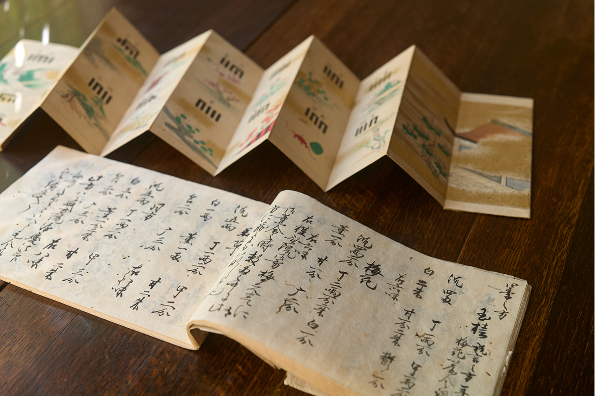
В лавке есть самые разные нэрико, в том числе любимые главами школ чайной церемонии, но в первую очередь стоит попробовать «Мукуса-но такимоно», шесть классических ароматов, известных с эпохи Хэйан. Шесть ароматов носят названия «Куробо», «Байка» («цветы сливы»), «Каё» («лист лотоса»), «Кикка» («хризантема»), «Ракуё» («опавшие листья») и «Дзидзю» («придворный»). Если зажечь их способом «сорадаки», которым пользовались ещё в эпоху Хэйан, можно ненадолго перенестись в изысканное время двора и почувствовать культуру, знакомую до этого только по книгам и картинам.
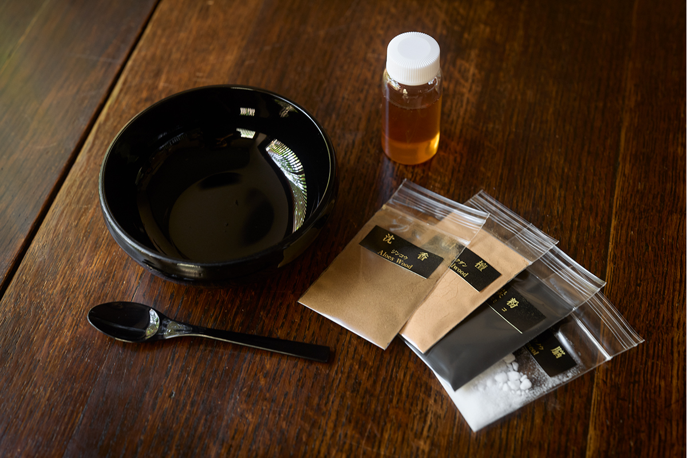
Есть и другие пути в мир благовоний. Аристократы составляли ароматы на свой вкус и соревновались, чей лучше, в игре «такимоно-авасэ», и в лавке есть товары, которые напоминают о ней. «Игра ароматов: такимоно своими руками» позволяет сделать нэрико самому: кроме 9 видов сырья в наборе есть угольный порошок, мёд, чаша для смешивания и мерная ложка.
Каким получится аромат нэрико, не знаешь, пока его не зажжёшь, и в этом весь интерес. Как в старинной игре, можно перебирать варианты и искать свой аромат, который расскажет о вас.
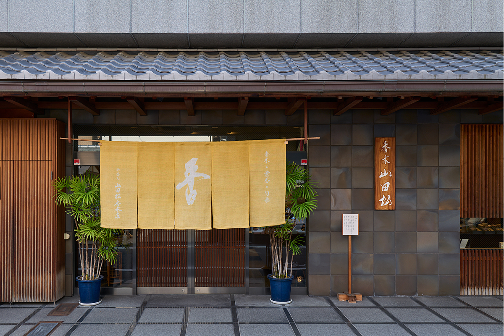
Yamadamatsu
- Адрес
- префектура Киото, Киото, район Камигё, Кадэнокодзи-тё, 164
- Телефон
- +81 75-441-4694
- Часы работы
- 10:30–17:00
- Выходные
- нет
Фото: Марико Тая.